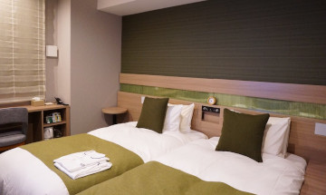
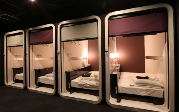
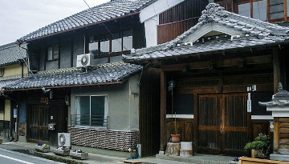
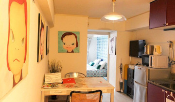
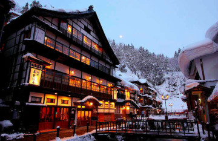

Where to stay?
Business Hotel
Rooms of business hotel are small but clean, usually have WiFi, and as they are aimed at businessmen. They usually come equipped with everything you might need: towels, soap, shampoo, toothbrush, comb, robe. They always have a private bathroom, desk, fridge, and kettle.
Some business hotels we’ve stayed in have laundry facilities, free breakfast, and even an onsen bath.
Capsule Hotel
A capsule hotel (カプセルホテル), also known as a pod hotel, is a type of hotel developed in Japan that features many small bed-sized rooms known as capsules. Capsule hotels provide cheap, basic overnight accommodation for guests who do not require or who cannot afford larger, more expensive rooms offered by more conventional hotels.
The guest room is a chamber roughly the length and width of a single bed, with sufficient height for a hotel guest to crawl in and sit up on the bed. Like a hostel, many amenities are communally shared, including toilets, showers, wireless internet, and dining rooms.
Minshuku
Minshuku (民宿) are family-operated, Japanese-style bed and breakfasts. They offer visitors a good opportunity to meet local families and experience the traditional Japanese lifestyle. Minshuku are typically located around tourist areas such as hot springs, ski resorts and in the mountains. They are also commonly found in smaller countryside cities and towns or by the sea.
Airbnb
Airbnb faced very strict restrictions a year ago when the government trying to set up rules minimize the disturbance to the normal life of local residents. But lately, Airbnb and other home-sharing services are recovering in Japan.
In Japan, Airbnb is often significantly cheaper than staying in a hotel, especially with multiple guests. Staying in a house or apartment also gives you a more “local” experience, and you may have extra conveniences that you wouldn’t get at a hotel, such as a kitchen or washing machine.
Ryokan
A ryokan (旅館) is a traditional Japanese inn. When you are planning where to stay in Japan, adding a ryokan to your itinerary will be an unique experience.
They are more expensive than standard hotel rooms but are worth trying. Don't forget the include the meal in your stay to have a complete Japan adventure.